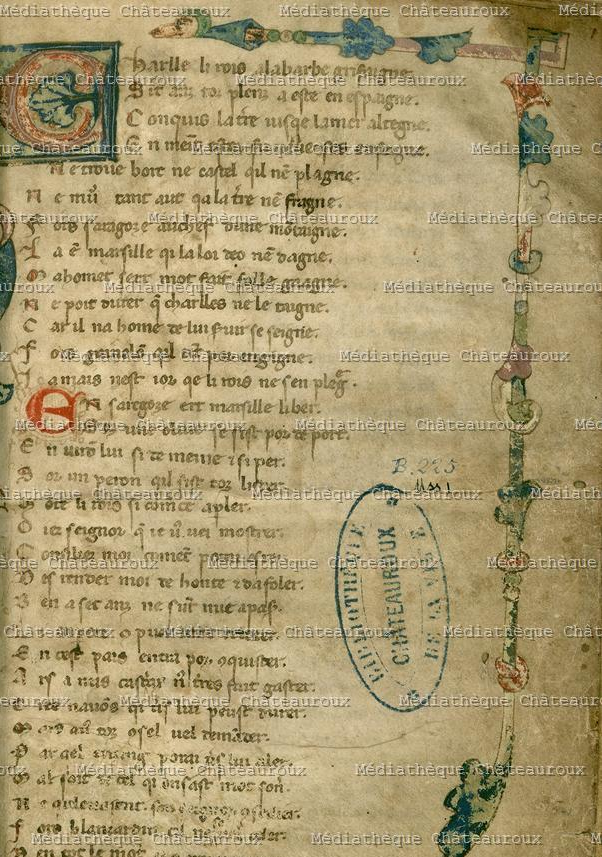

Présentation
Le même passage dans le manuscrit de Châteauroux, laisse 211 (Châteauroux, Médiathèque, 1, f.51v), d'après l'édition de Jean Subrenat, Paris, Champion Classiques, 2016, p. 304-306. Le texte est reproduit comme dans l'édition, avec les corrections dans le texte même.
↔ Retourner à la transcription du MS. Digby 23
Facsimilé

MS. de Châteauroux, Médiathèque, 1, f. 51v
Consulter le manuscrit numérisé en ligne :
↗ Médiathèque de ChâteaurouxFonds numérisé — MS. 1
Transcription — Laisse 211
Laisse 211
1 Voit Olivers qe a mort est feruz.
2 Tint Hauteclere don l'acer est moluz,
3 Fiert l'augalie sor son eume, irascuz.
4 Pieres et flors l'en a creventez juz.
5 Le chief li fent deci as denz menuz.
6 Aprés li dist : "Paien, mal aies tu(z)!"
7 Je ne di mie Kar[lles] n'i ait perduz,
8 Mais tu nel nonceras el reigne [d]on tu fuz."
9 Puis en apele R[ollant] qe vaigne a luz.
10 Voit Oliver qe mort est feruz,
11 De lui vengier est fortment aveüz.
12 En la grant presse se fiert tot esperduz.
13 Qi lor veïst Saraçins desronpuz,
14 Un mort sor l'autre a la terre estenduz,
15 De bon vasal remembrer li peüst.
16 L'enseigne Charlle oblier non volt pluz.
17 "Monjoie!" escrie, mot bien coneüz.
18 R[ollant] apele, son ami et son druz,
19 Se li a dit : "Ensçanble n'itons pluz."
20 Li uns a l'autre fait duel qi n'i poit pluz.
Variantes entre les deux manuscrits
| V. | MS. Digby 23 — laisses 146–147 | MS. Châteauroux — laisse 211 |
|---|---|---|
| 17 | Oliver sent que a mort est ferut | Voit Olivers qe a mort est feruz. |
| 18 | Tient Halteclere dunt li acer fut bruns, | Tint Hauteclere don l'acer est moluz, |
| 19 | Fiert Marganices sur l'elme a or agut, | Fiert l'augalie sor son eume, irascuz. |
| 20 | E flurs e cristaus en acraventet jus. | Pieres et flors l'en a creventez juz. |
| 21 | Trenchet la teste d'ici qu'as denz menuz, | Le chief li fent deci as denz menuz. |
| 22 | brandist sun colp, si l'ad mort abatut, | Aprés li dist : "Paien, mal aies tu(z)!" |
| 23 | E dist aprés : "paien, mal aies tu ! | Je ne di mie Kar[lles] n'i ait perduz, |
| 24 | Iço ne di que Karles n'i ait perdut : | Mais tu nel nonceras el reigne [d]on tu fuz." |
| 25 | Ne a muiler ne a dame qu'aies veüd | Puis en apele R[ollant] qe vaigne a luz. |
| 26 | N'en vanteras el regne dunt tu fus | Voit Oliver qe mort est feruz, |
| 27 | Vaillant a un dener que m'i aies tolut, | De lui vengier est fortment aveüz. |
| 28 | ne fait damage ne de mei ne d'altrui." | En la grant presse se fiert tot esperduz. |
| 1 | Aprés escrüet Rolland qu'il li ajut. AOI. | Qi lor veïst Saraçins desronpuz, |
| 2 | Oliver sent qu'il est a mort nasfrét, | Un mort sor l'autre a la terre estenduz, |
| 3 | De lui venger ja mais ne li ert sez. | De bon vasal remembrer li peüst. |
| 4 | En la grant presse or i fiert cume ber, | L'enseigne Charlle oblier non volt pluz. |
| 5 | Trenchet ces hanstes et cez escuz buclers | "Monjoie!" escrie, mot bien coneüz. |
| 6 | E piez e poinz e seles e costez. | R[ollant] apele, son ami et son druz, |
| 7 | Ki lui veïst Sarrazins desmembrer, | Se li a dit : "Ensçanble n'itons pluz." |
| 8 | Un mort sur altre geter, | Li uns a l'autre fait duel qi n'i poit pluz. |
| 9 | De bon vassal li poüst remembrer. | — |
| 10 | L'enseigne Carle n'i volt mie ublier : | — |
| 11 | "Munjoie !" escrïet e haltement et cler; | — |
| 12 | Rolland apelet, sun ami e sun per : | — |
| 13 | "Sire cumpaign, a mei car vus justez !ï | — |
| 14 | A grant dulor ermes hoi desevrez." AOI. | — |